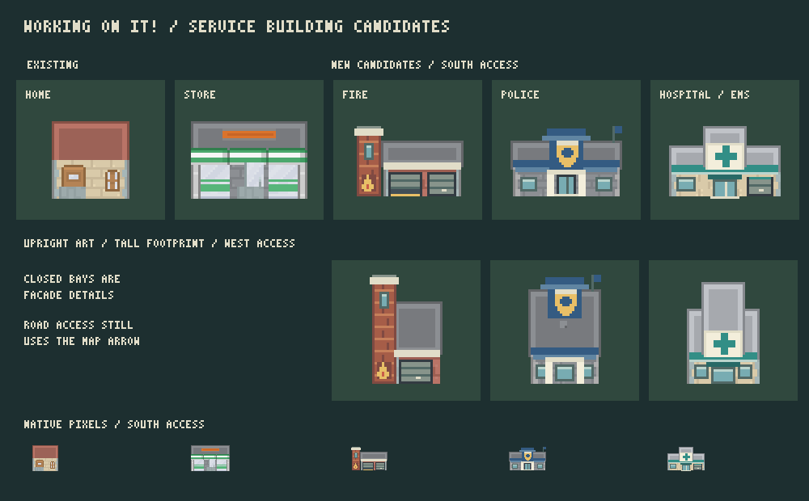

Fire station
Brick tower and engine-bay shutters.
Working ON IT! Fire, police, and EMS, built to match the town's pixel artwork.
Approved September 9, 2026. These service buildings are now installed in the game.
Brick tower and engine-bay shutters.
Blue civic frontage and shield.
Pale walls and teal medical symbol.

Changing the entrance reshapes the footprint while keeping the artwork upright. The game's entrance arrow remains the road-access indicator.